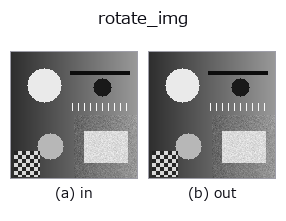

geometry op• Datenarten: image → image
• Aufruf: fullseye.apply(img, "rotate_img", a=0.5, b=0.5) (das 2-D-Modell ist ein Bild plus zwei skalare Regler a,b∈[0,1])
• HALCON-Äquivalent: rotate_image (Bedeutung und Parameter sind in der HALCON-Referenz nachzulesen)

*Die Abbildung ist die tatsächliche Ausgabe auf einer synthetischen 128×128-Eingabe. Links Eingabe, rechts Ausgabe. Punktwolken als Draufsicht-Streudiagramm (Helligkeit = z), 1-D-Reihen als Linie, Volumen als Maximum-Projektion entlang z, Videos als mittleres Bild, komplexe Bilder als Betrag; Rückgabewerte, die kein Bild ergeben, werden als Werte gezeigt.*
Regler a durchfahren (0,1 / 0,5 / 0,9, der andere Regler auf Standard):
▸ rotate_img: Regler a durchfahren (Doku-Website)
*Regler b ändert die Ausgabe nicht (gemessen: identisch bei 0,1 / 0,5 / 0,9).*
Auf anderen Bildern (synthetische Szene / Foto / Münzen. Obere Reihe: Eingaben, untere Reihe: deren Ausgaben. Regler auf Standard):
▸ rotate_img: andere Eingaben (Doku-Website)
*Die 4. Spalte ist eine Farb-Eingabe (H,W,3). Dieser Op verarbeitet Farbe, ohne Kanäle zu vermischen (er faltet den Farbkanal nicht als dritte Raumachse).*
Dreht um die Bildmitte um -45° + 90°·a (a=0,5 → 0°). b unbenutzt.
★Aufrufkonvention (am 2026-09-02 schriftlich festgehalten; die Implementierung wurde nicht geändert):
• Die Leinwand wird nicht verändert (reshape=False). Die Ausgabe-shape ist dieselbe wie die der Eingabe, und Pixel, die durch die Rotation den Rahmen verlassen, werden verworfen.
• Außerhalb des Rahmens wird gespiegelt aufgefüllt (mode="reflect"). Beim Drehen klappt also das Originalbild um und erscheint in den vier Ecken (dreht man ein Formular, erscheinen in den Ecken Spiegelschriftzeichen).
Was kanonisch ist, hängt vom Einsatz ab. Der Kanon dieses Ops lautet "auch verkettet kommt immer ein Bild gleicher Form und gleichen Wertebereichs heraus" - die Evolutionspipeline verbindet images zwischen den Stufen bedingungslos, daher würden sich bei geänderter shape oder einer Konstante außerhalb des Rahmens die nachgelagerten Statistiken (Mittelwert, Varianz, Histogramm) abhängig vom Drehwinkel verschieben. Spiegelung bewahrt statt "einer aus dem Nichts erzeugten Konstante" die eigenen Statistiken des Bildes, daher wird sie für diesen Zweck gewählt.
Nicht geeignet für deskew (Neigungskorrektur von Formularen): Die umgeklappten Spiegelschriftzeichen gelangen unverändert in OCR / Binarisierung. Soll mit der Hintergrundfarbe gefüllt werden, dieses Op nicht verwenden, sondern scipy.ndimage.rotate(v, ang, reshape=True, mode="constant", cval=bg) direkt aufrufen (über die 2-Regler-Schnittstelle von fullseye.apply lässt sich keine Hintergrundfarbe übergeben). Dieselbe Konvention gilt auch für rotate_image in backends_auto (_sh_geom kind="rotate") unverändert.
• Leitfaden zur Familie gallery2d_geometry
• Katalog der Beispieldaten (Download-URLs / Lizenzen) — 2-D nutzt skimage.data (BSD/Public Domain) plus synthetische Bilder, 3-D nennt Download-URLs echter Datenquellen (Stanford, PDS, …).
• Herkunft und Literatur der Operatoren — die Quellen der Forschung/Verfahren, auf denen diese Operatorfamilie beruht.
• Der kanonische Algorithmus (Autor, Jahr) und seine Anwendungen stehen im Familienleitfaden oben.
Das Programm unten ist nachweislich lauffähig (gleiche Eingabe wie die Abbildung). In der Studio-Hilfe wird dieser Block zu Schaltflächen, die es sofort laden und ausführen.
rotate_img 0.50 0.50
▸ Diese Pipeline laden · Laden & ausführen
• gallery2d_geometry — py -3.11 examples/gallery2d_geometry.py
image als Eingabe)identity · gaussian · mean_box · bilateral · unsharp · median · min_filter · max_filter
geometry)deskew · rescale_img · affine_warp · sk_swirl · mirror_image · transpose_region · rotate_image · zoom_image_factor
*Provenance: ops.py — 2D Operator-Registry. Diese Notiz wird von tools/opdocs.py md erzeugt (nicht von Hand bearbeiten).*
© 2026 Kazufumi Furuse — Fullseye operator documentation. Licensed under Apache-2.0.